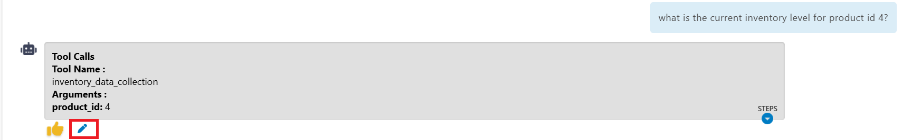
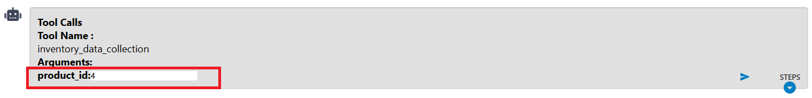
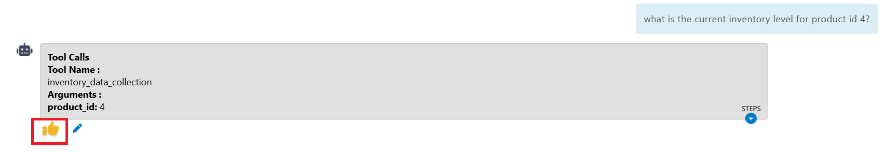

Tool Interrupt
The Tool Interrupt feature provides users with enhanced control over how tools are executed within the framework. This feature allows users to review, modify, and approve tool executions before they are processed, giving greater transparency and control over the agent's behavior.
Overview
Tool Interrupt is a toggle feature available in the inference section of the framework that changes how tools are called and executed when processing user queries.
Toggle Location :
The Tool Interrupt toggle button can be found in the Inference section of the framework interface.
Operating Modes
Without Tool Interrupt (Default Mode)
When Tool Interrupt is disabled, the system operates in automatic mode:
- User submits a query
- The agent automatically identifies required tools
- Tools are called sequentially with parameters derived from the user query
- Final answer is provided directly without user intervention
Example:
- User Query: 2-10*5
- System Response: The answer is -48
With Tool Interrupt (Interactive Mode)
When Tool Interrupt is enabled, the system operates in interactive mode :
- User submits a query
- System displays the first tool to be called with its parameters
- User can review and modify parameters before execution
- User approves each tool execution step-by-step
- System shows dependent tools in sequence
- Final answer is provided after all approvals
Tool Interrupt Workflow
Step 1: Tool Identification
When a user submits a query, the system identifies the first tool that needs to be called and displays:
- Tool Name: The specific tool to be executed
- Parameters: The arguments that will be passed to the tool
Step 2: Parameter Review and Editing Users have two options:
Option A: Edit Parameters
- Click the "Edit" button
- Modify the tool arguments as needed
- Confirm changes
Option B: Approve Parameters
- Click the "👍" (thumbs up) button to approve current parameters
- System proceeds with the tool execution
Step 3: Sequential Tool Execution
- After approval, the tool executes with the specified parameters
- If additional tools are required, the system displays the next tool in the sequence
- Process repeats until all dependent tools are executed
Step 4: Final Result
- Once all tools have been executed, the system provides the final answer
Practical Example: Calculator Agent
Let's walk through a detailed example using a Calculator Agent with the following tools:
add(a, b)- Additionsub(a, b)- Subtractionmult(a, b)- Multiplicationdiv(a, b)- Division
User Query: 2-10*5
Without Tool Interrupt:
Input: 2-10*5
Output: The answer is -48
With Tool Interrupt:
Step 1: System identifies first operation
Tool to call: mult(a, b)
Parameters: a=10, b=5
User Options:
- Edit: Modify parameters (e.g., change to a=5, b=2)
Click on the Edit option as shown below to modify the parameters:

The image below shows where you can edit the parameters:

- 👍: Approve current parameters.

Step 2: If user approves original parameters
Tool executed: mult(10, 5) = 50
Next tool: sub(a, b)
Parameters: a=2, b=50
Step 3: User approves subtraction
Tool executed: sub(2, 50) = -48
Final Answer: -48
Alternative Step 2: If user edits multiplication parameters
Modified parameters: mult(5, 2) = 10
Next tool: sub(a, b)
Parameters: a=2, b=10
Final Result with edited parameters:
Tool executed: sub(2, 10) = -8
Final Answer: -8
Benefits of Tool Interrupt
Enhanced Control
- Users can intervene in the tool execution process
- Ability to correct parameters before execution
- Prevention of unintended tool calls
Transparency
- Clear visibility into which tools are being called
- Understanding of parameter values being used
- Step-by-step execution visibility
Debugging and Testing - Ability to test different parameter combinations - Easy identification of tool execution issues - Validation of tool selection logic
Educational Value - Understanding of how complex queries are broken down - Learning about tool dependencies and execution order - Insight into agent decision-making process
Best Practices
Enable Tool Interrupt when: - Testing new agent configurations - Working with sensitive data or operations - Learning how tools interact with each other - Debugging complex queries - Need precise control over tool parameters
Disable Tool Interrupt when: - Running routine, well-tested operations - Processing bulk queries - Working with trusted tool configurations - Need fast, automated responses
Parameter Editing Guidelines :
- Review Carefully: Always review the suggested parameters before editing
- Understand Dependencies: Consider how parameter changes might affect subsequent tools
- Test Incrementally: Make small changes and observe results
- Document Changes: Keep track of parameter modifications for future reference